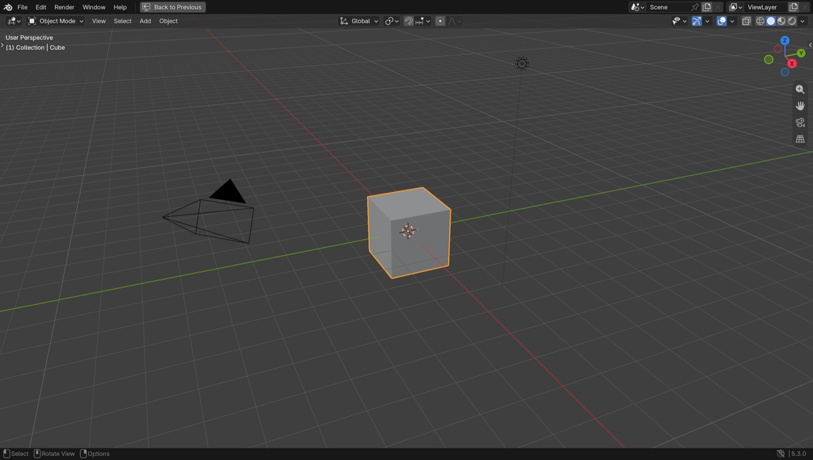

Complexity ends here.
One intelligence. Every interface.
Cerebro understands the software you use and transforms complicated interfaces into focused workspaces built around what you want to accomplish.
Same software. An entirely different experience.
- 01Examining the interface
- 02Scanning every control
- 03Illuminating what matters
- 04Clearing the rest
- 05Assembling your workspace
- 06Ready to use
Illustration of how Cerebro works · real captures below
Real capture · Blender 5.3
Not a mockup. The real thing.
Cerebro hid these panels through Blender’s own API and brought every one back with a single click. Drag to compare.


Original With Cerebro- 1,207
- operations Cerebro found in Blender
- 1
- focused workspace on screen
- 1 click
- to bring the full interface back
One intelligence. Limitless applications.
The same engine reads very different software. Choose an app and watch its interface reorganise around a goal.
Simplified representations of each app’s interface, drawn for illustration. App names belong to their owners; Cerebro isn’t affiliated with them. “Planned” and “Concept” integrations aren’t available yet.
Experience Cerebro.
A browser simulation of how Cerebro turns a goal into a workspace. Nothing on your computer is being controlled.
For decades, humans have been learning how to use computers.
What if computers learned how we wanted to use them?
Cerebro is building toward that future.
Software should adapt to you.
Already working. On real software.
Every row below comes from Cerebro running against the real application on a Mac, not from a simulation.

Working now
- Mac app for Accessibility-ready Mac apps
- Chrome extension for web apps
- Blender plugin with verified actions
- Offline workspace planning
- Simplify, undo and restore
Experimental
- AI planning with your own Anthropic key: built in, not yet proven at scale
- Pages and Keynote: controls work, but canvas changes can’t be verified yet
- Web apps whose menus ignore automation, like Photopea’s, fall back to guidance
Coming next
- Windows and Linux
- Plugins for DaVinci Resolve and Adobe apps
- Screen understanding for apps with hidden controls
- Remembered layouts and preferences
- A signed, notarized Mac app
Your software. Your control.
Cerebro changes how an app looks, never what it contains, unless you press a tool that does. Here is exactly what it can and can’t do.
Sent for planningThe app’s name, your goal, and the names and menu locations of the controls Cerebro found, like “Insert › Chart”.
Never sentWhat you type into fields, passwords, or screenshots. Without a key, Cerebro plans offline on your Mac.
- Everything comes back.Show the original interface at any time. Quitting Cerebro or switching apps restores every app as it was.
- Risky actions wait for you.Delete, send, pay, publish and quit always need a second click.
- Automated or guided, always labelled.Verified runs through the app’s own API and is checked. Live is pressed for you, then confirmed. Guide is pointed out, and you press it.
- Passwords are off-limits.Password and secure fields are blocked in the engine itself, and field contents are never read.
- Permissions you can see.macOS asks before Cerebro gets Accessibility, and you can revoke it in System Settings. The Chrome extension acts only on the tab where you switch it on.
- The AI chooses, never acts.It can only pick from controls Cerebro found; it can’t invent actions or run code. Your key is encrypted with your Mac’s Keychain.
Early access · v0.1.0
Meet your new interface.
Start with the Mac app. Add the Chrome extension for web apps and the Blender plugin for 3D work.
-
Activate Cerebro
Cerebro for Mac
The floating Cerebro panel. Works with Numbers, Pages, Keynote, TextEdit and most other Mac apps.
How to install
- Unzip and move Cerebro to Applications.
- Open it. If macOS says it can’t verify Cerebro, click Done, then open System Settings › Privacy & Security and click Open Anyway.
- Allow Accessibility when Cerebro asks.
-
Download .zip
Chrome extension
Simplifies web apps like Excalidraw and Photopea right on the page.
How to install
- Unzip the file.
- Open
chrome://extensionsand turn on Developer mode. - Click Load unpacked and choose the folder.
-
Download .zip
Blender plugin
Gives Cerebro direct, verified control of Blender’s own operations.
How to install
- In Blender, open Edit › Preferences.
- Choose Get Extensions › Install from Disk.
- Pick the downloaded .zip.
AvailablemacOS on Apple Silicon · Chrome, Brave and Edge · Blender 4.2+
Coming laterWindows · Linux
Cerebro is an early build and isn’t notarized by Apple yet, which is why macOS asks you to approve it once in Privacy & Security. It needs the Accessibility permission to read and press controls in Mac apps. For AI-designed workspaces, paste your own Anthropic API key in Cerebro › Settings; without one, Cerebro plans offline.